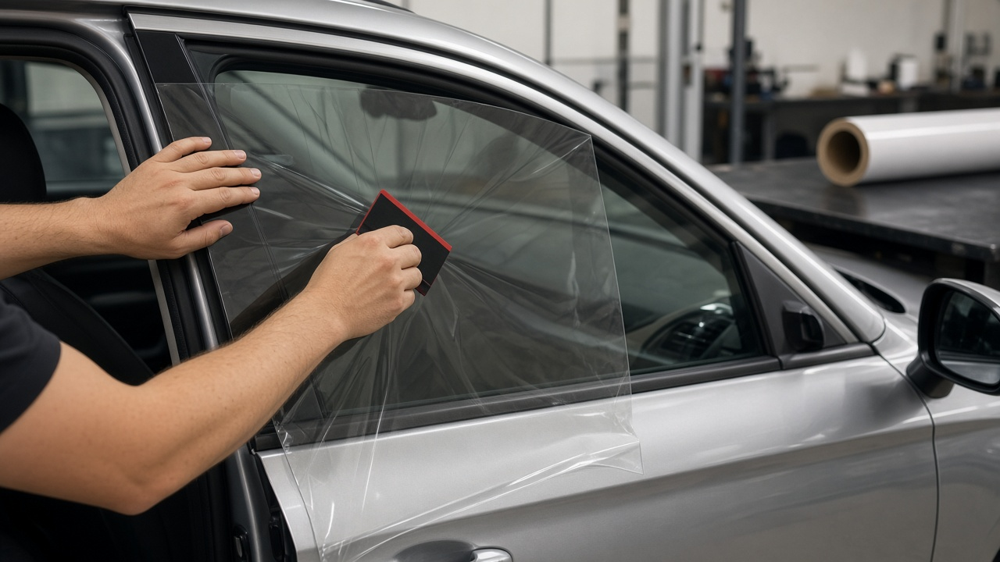
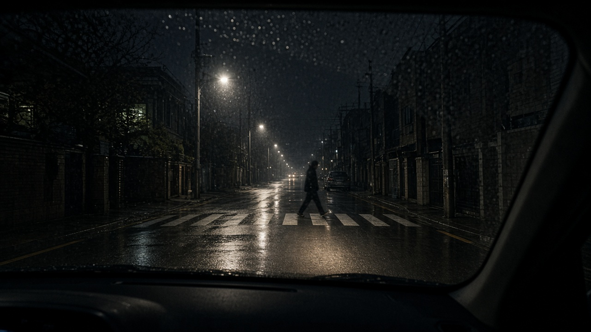
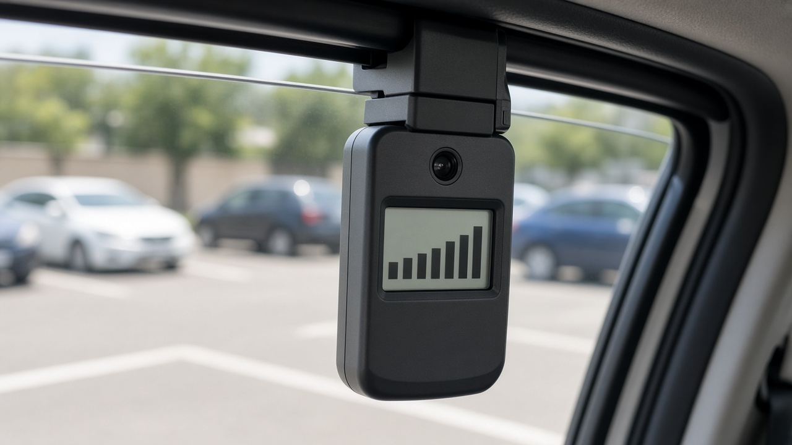

썬팅 농도 법 기준 앞유리 70퍼센트 운전석 옆유리 40퍼센트, 필름 숫자와 실제 투과율이 다른 이유까지

새 차를 뽑거나 썬팅을 다시 하려고 매장에 가면 앞유리 몇, 옆유리 몇 하는 숫자부터 고르게 되죠. 그런데 그 숫자가 법에서 말하는 기준과 같은 뜻인지, 단속은 실제로 하는지, 밤에는 얼마나 차이가 나는지 헷갈리는 분이 많아요. 오늘은 도로교통법과 시행령, 찾기쉬운 생활법령정보, 한국교통안전공단 시험 결과를 바탕으로 썬팅 고르기 전에 알아 두면 좋은 내용만 정리해 볼게요.
법이 정한 숫자는 빛이 얼마나 들어오느냐예요
도로교통법은 창유리의 가시광선 투과율이 기준보다 낮아서 교통안전에 지장을 줄 수 있는 차를 운전하지 못하게 하고 있어요. 그 기준은 도로교통법 시행령 제28조에 나와 있는데, 앞면 창유리는 70퍼센트, 운전석 좌우 옆면 창유리는 40퍼센트예요. 이 숫자보다 빛이 덜 들어오면 기준에 못 미치는 거예요.
여기서 운전석 좌우 옆면은 운전석과 조수석, 그러니까 1열 창문을 말해요. 뒷좌석 창문과 뒷유리는 지금 도로교통법 시행령 기준에 들어 있지 않아요. 2008년 시행령 개정 때 승용차 뒷면 창유리 기준이 삭제됐기 때문이에요.
또 경호용, 구급용, 장의용 자동차는 이 규정에서 빠져 있어요. 일반 승용차와 승합차라면 모두 같은 기준을 적용받는다고 보면 돼요.

매장에서 말하는 필름 숫자와 법 기준은 같은 게 아니에요
가장 많이 헷갈리는 부분이 여기예요. 매장에서 35, 50처럼 부르는 숫자는 보통 필름 한 장이 빛을 얼마나 통과시키는지를 말해요. 반면 법이 보는 건 유리에 필름을 붙인 최종 상태에서 운전자 눈까지 들어오는 빛의 양이에요.
자동차 유리는 원래부터 빛을 조금씩 막아요. 그래서 필름의 숫자에 유리 자체의 투과율이 곱해지면, 실제 투과율은 필름 숫자보다 더 낮아져요. 예를 들어 투과율 50퍼센트 필름을 붙이면 유리까지 합친 실제 값은 50퍼센트보다 내려간다는 뜻이에요.
이렇게 보면 앞유리 70퍼센트 기준을 맞추려면 아주 밝은 필름이거나 필름을 붙이지 않아야 하는 경우가 많아요. 기준을 지키고 싶다면 매장에 필름 숫자만 묻지 말고, 시공 뒤 측정기로 실제 투과율을 재서 보여 줄 수 있는지 물어보는 게 확실해요.
걸리면 과태료 2만원, 현장에서 제거를 명할 수도 있어요
찾기쉬운 생활법령정보에 따르면 투과율 기준보다 낮아 교통안전에 지장을 줄 수 있는 차를 운전한 사람은 과태료 2만원을 부과받아요. 근거는 도로교통법 제160조와 시행령 별표 6이에요.
금액보다 눈여겨볼 건 그다음 조항이에요. 경찰공무원은 이런 차를 발견하면 현장에서 운전자에게 위반 사항을 없애거나 필요한 조치를 하라고 명할 수 있고, 운전자가 따르지 않으면 직접 제거하거나 조치할 수 있어요. 도로교통법 제49조 제2항에 들어 있는 내용이에요.
한편 일반 승용차는 자동차 정기검사에서 썬팅 투과율을 따로 재지 않아요. 자동차관리법 시행규칙의 검사기준을 보면 창유리 항목에서 투과율을 확인하는 대상은 어린이운송용 승합자동차로 정해져 있어요. 그래서 검사를 통과했다고 해서 도로 위 기준까지 맞는다는 뜻은 아니라는 점을 기억해 두세요.

어린이 통학차는 모든 창문이 70퍼센트 이상이어야 해요
어린이를 태우는 학원차나 유치원 차량을 운영한다면 기준이 훨씬 엄격해요. 자동차 및 자동차부품의 성능과 기준에 관한 규칙 제94조 제3항은 어린이운송용 승합자동차의 모든 창유리 또는 창의 가시광선 투과율을 70퍼센트 이상으로 정하고 있어요.
앞유리와 1열뿐 아니라 뒷좌석 창문과 뒷유리까지 모두 해당돼요. 그리고 이 차량들은 신규검사와 정기검사 때 측정기로 투과율을 재거나 썬팅 여부를 눈으로 확인해요. 2020년 자동차관리법 시행규칙 개정으로 검사기준에 추가된 내용이에요.
중고 승합차를 사서 통학용으로 바꾸려는 경우라면, 기존에 붙어 있던 짙은 필름을 먼저 제거해야 검사에서 문제가 생기지 않아요.
밤에는 썬팅 농도에 따라 보행자가 보이는 거리가 달라져요
그렇다면 실제 운전에서는 얼마나 차이가 날까요. 한국교통안전공단은 2023년 11월 경기도 화성시 자동차안전연구원에서 등화장치와 틴팅 농도에 따른 가시거리 비교 시험을 했어요. 정지한 차량 운전석에서 보행자가 언제 보이는지를 잰 시험이에요.
야간에 하향등을 켠 상태에서 앞유리 틴팅 농도가 50퍼센트일 때는 24미터 앞에서 보행자가 보였는데, 30퍼센트에서는 20미터, 15퍼센트에서는 18미터로 줄었어요. 같은 조건에서 주간주행등만 켜면 16미터, 하향등은 29미터, 상향등은 79미터였고, 검은 옷은 흰 옷보다 보이는 거리가 14미터 짧았다고 해요.
몇 미터 차이가 작아 보여도 밤길에서는 브레이크를 밟을 시간이 그만큼 줄어드는 거예요. 공단도 다양한 운행 조건에서 시야를 확보하려면 등화장치를 올바르게 쓰고 적정한 틴팅 농도를 고르라고 당부했어요.
썬팅 고르기 전에 이렇게 정리해 보세요
정리하면 이 순서로 보면 편해요. 먼저 앞유리와 1열은 법 기준이 있는 자리라는 걸 기억하고, 매장에 필름 숫자가 아니라 시공 후 실제 투과율을 물어보세요. 열이나 눈부심이 걱정이라면 투과율은 밝게 두고 열차단 성능을 따로 따져 보는 방법도 있어요.
뒷좌석과 뒷유리는 일반 승용차 기준에 빠져 있어 선택 폭이 넓지만, 어린이 통학차라면 모든 창문이 70퍼센트 이상이어야 한다는 점을 꼭 확인하세요. 그리고 이미 짙게 시공된 차라면 야간과 비 오는 날에는 속도를 조금 더 줄이고 하향등을 확실히 켜는 습관이 도움이 돼요. 오늘 내용은 10월 25일 기준 법령과 공공기관 안내를 바탕으로 정리했어요.
참고 자료 도로교통법 제49조와 제160조, 도로교통법 시행령 제28조, 찾기쉬운 생활법령정보 자동차 관리 시 준수사항, 자동차 및 자동차부품의 성능과 기준에 관한 규칙 제94조, 자동차관리법 시행규칙 별표 15 자동차검사기준, 한국교통안전공단 등화장치 및 틴팅 농도 가시거리 비교 시험 2023년 11월 연합뉴스 보도
태그 썬팅농도 썬팅법규 가시광선투과율 썬팅과태료 앞유리썬팅 틴팅농도 자동차썬팅 야간운전 어린이통학차량 차량관리